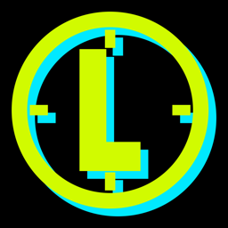
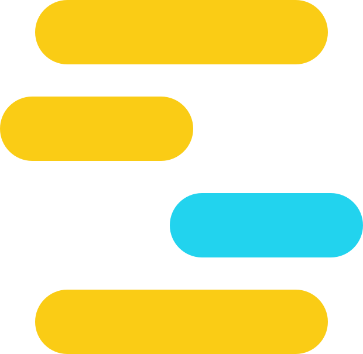

Un color para cada momento.
Verde cuando trabajás, turquesa cuando descansás. Sabés qué está pasando antes de leer nada, con la respiración agitada y el teléfono a dos metros.

LAPSOTimer de intervalos para iPhone y Apple Watch. El número lo más grande posible, un color para cada momento y un rectángulo por cada segundo.
Una app de 
Tres, dos, uno. Arranca con la largada de una carrera: bip, bip, biiip.
El número ocupa todo el ancho. El marco suma un rectángulo por segundo, de golpe, sin animaciones blandas.
Sigue y Después quedan siempre a la vista. Diez segundos antes de volver, una doble campanita.
Las últimas series de cada ejercicio se pintan solas, para que aprietes cuando falta poco.
Desde la pausa seguís, terminás, silenciás o cambiás cuántas series se pintan. El tiempo en pausa se pone rojo desde el minuto.
Cuánto entrenaste, descansaste y pausaste, tu pulso por bloque y el tiempo en cada zona.
Verde cuando trabajás, turquesa cuando descansás. Sabés qué está pasando antes de leer nada, con la respiración agitada y el teléfono a dos metros.
Un marco recorre el borde de la pantalla y sigue sus esquinas. Cada rectángulo se llena de golpe al cumplirse su segundo: el tiempo avanza como en un reloj de verdad.
Elegí cuántas: ninguna, una, dos o tres. Siempre en el mismo orden, amarillo, naranja y rojo. La primera serie de un ejercicio nunca se pinta. Probalo:
Dos toques pausan. Deslizar hacia los costados pasa al bloque siguiente o vuelve al anterior. ¿Te equivocaste? Tenés tres segundos para deshacerlo.
Se reconocen sin mirar, y cada sonido viene con su vibración en el reloj. Se generan en vivo, no son grabaciones. Tocá para escucharlos:
La isla dinámica y la pantalla bloqueada muestran el número, el ejercicio y tu pulso. Desde ahí pausás o silenciás, sin abrir la app.
El número enorme, la serie y tu pulso al lado, y abajo lo que sigue. La franja de arriba y el marco llevan el color del momento.
En la app armás rutinas con ejercicios, superseries, lado izquierdo y derecho, entrada en calor y notas. Se pasan solas al reloj.
No. Lapso funciona solo en el iPhone. Si tenés reloj, la app del Apple Watch viene incluida: pulso y zonas en vivo, vibración en la muñeca y la medición de recuperación.
Sí. Suena, vibra y se ve en la isla dinámica y en la pantalla bloqueada. Desde ahí podés pausar o silenciar.
Sí, si le das permiso. Cada sesión queda como entrenamiento en Salud, con su duración, pulso y calorías.
Sigue sonando. Lapso baja el volumen de la música solo durante cada aviso y lo devuelve enseguida.
En tu iPhone, tu reloj y tu iCloud. Lapso no tiene cuentas ni publicidad.
Los primeros 30 días son gratis. Después, US$1,99 por mes o US$14,99 por año, y cancelás cuando quieras. Incluye todo: iPhone y Apple Watch, pulso, rutinas sin límite, historia y recuperación. Apple te muestra el precio en la moneda de tu país. Términos de uso.
TestFlight es la app de Apple para probar apps antes de que salgan. Es gratis.